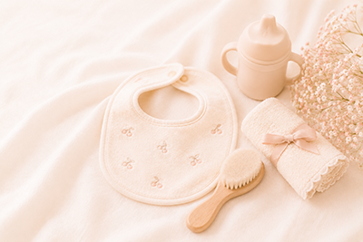

Care Menu 02
赤ちゃんを預けたいときに
ケア内容・メニュー
新生児・低月齢の赤ちゃんも、助産師としての経験を活かして安心してお預かりします。
ご家族の外出や在宅勤務中の見守りなど、それぞれの生活スタイルに合わせて
サポートいたします。

対象
生後0か月〜12か月未満
継続利用の方は1歳以降もご相談ください
初めての方もご利用いただけます
継続利用の方は1歳以降もご相談ください
初めての方もご利用いただけます
エリア
武蔵小杉・元住吉を中心に
訪問しています
中原区・高津区
その他の地域もお気軽にご相談ください
訪問しています
中原区・高津区
その他の地域もお気軽にご相談ください
料金
2時間 8,000円
3時間 11,500円
延長30分 2,000円
未就学の兄弟児対応 ＋1,000円／時間
未就学の兄弟児対応 ＋1,000円／時間
※上記エリアは交通費込みです
3時間 11,500円
延長30分 2,000円
未就学の兄弟児対応 ＋1,000円／時間
未就学の兄弟児対応 ＋1,000円／時間
※上記エリアは交通費込みです
できること
- 新生児・低月齢の赤ちゃんのお預かり
- ママ・パパの外出中やご自宅でのお世話
- 在宅勤務中の見守り
- 授乳・ミルク・寝かしつけなど育児全般のご相談
- 未就学のご兄弟も一緒に対応（＋1,000円／時間）
できないこと
- 家事代行
- 37.5度以上の発熱や感染症が疑われる場合のお預かり
- 未成年の方へのお引き渡し
ご利用イメージを見る →
Model Course
ご利用イメージ
- 01ご希望やお子さまの様子をお伺いします
- 02当日の流れや過ごし方を一緒に確認します
- 03ご希望に合わせて、お子さまをお預かりします
- 04お迎え時に、ご様子や気づいたことをお伝えします
初めてご利用の方は、事前に15〜30分ほどの無料オンライン面談をお願いしています。
Model Course
ご利用イメージ
ママが美容院や通院、休息に使える3時間コース。
- 01ご希望やお子さまの様子をお伺いします
- 02当日の流れや過ごし方を一緒に確認します
- 03ご希望に合わせて、お子さまをお預かりします
- 04お迎え時に、ご様子や気づいたことをお伝えします
初めてご利用の方は、事前に15〜30分ほどの無料オンライン面談をお願いしています。